빌 그로스가 아이디어를 공짜로 푼 이유
영상은 사이트 첫 화면으로 시작해요. 가운데 큰 숫자가 지금까지 만든 사업 아이디어 개수이고, 그 아래 'Free.' 한 단어가 이 서비스의 핵심이에요. 숫자는 실시간으로 올라가서, 이 장면에서는 1,208,579개였어요.
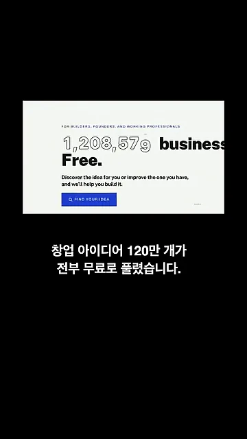
이 아이디어를 푼 사람은 빌 그로스(Bill Gross)예요. 화면 왼쪽 위의 '175+ 개 회사'가 그가 세운 회사 수이고, 뒤 벽에 붙은 로고들이 그 회사들이에요. 175개가 넘는 회사를 세운 연쇄 창업가인 셈이에요.
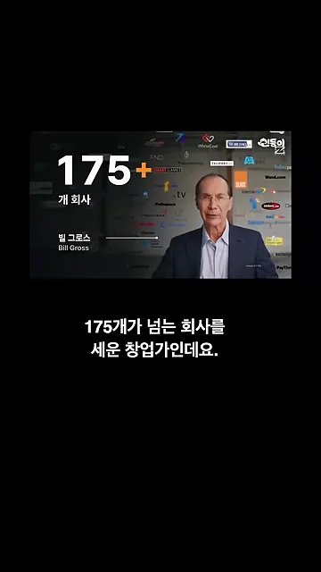
그런데 AI가 그 특기를 앞질렀어요. 화면에 노란 띠로 강조된 'AI … could outperform my own superpower'가 그의 말이에요. AI가 자기만의 무기보다 더 잘한다는 걸 인정한 거예요. 혼자서는 다 만들 수 없을 만큼 아이디어가 쏟아지니, 아예 모두에게 나눠 주기로 했어요.
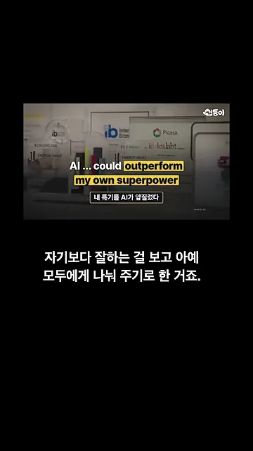
아이디어 120만 개는 어떻게 나왔나
재료는 두 가지예요. 첫째는 빌 그로스가 평생 다듬은 발상법 31가지예요. 화면 왼쪽의 큰 '31'과 작은 카드 묶음이 그 발상법들이고, 오른쪽 AI 아이콘으로 들어가는 모습이에요.
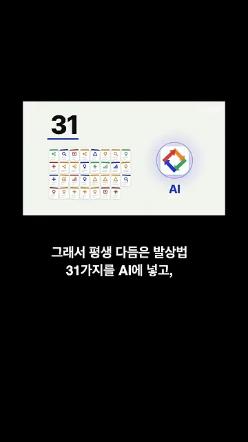
둘째는 세상의 문제를 담은 자료예요. 뉴스, 논문, 특허, 고객 불만까지 1,700만 건 넘게 읽혔어요. 화면의 'SOURCES READ' 카운터는 17,597,313건을 가리키고, 옆에 'LIVE' 표시가 있어 지금도 늘고 있다는 걸 보여 줘요.
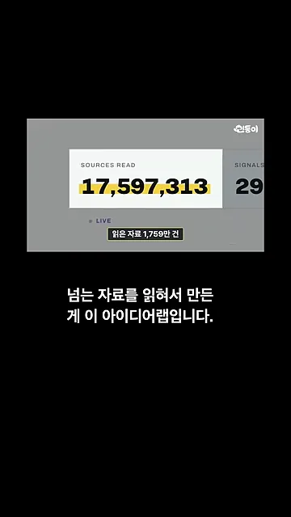
두 재료가 만나는 흐름을 한 장으로 그리면 이렇게 돼요. 아래 두 단계는 다음 섹션에서 다루는 쓰는 법이에요.
flowchart LR A["발상법 31가지"] --> C["AI"] B["자료 1,700만 건+
뉴스·논문·특허·고객 불만"] --> C C --> D["사업 아이디어 120만 개+"] E["내 한 줄
잘하는 것·가진 돈·사는 곳"] --> F["나에게 맞는 순서로 정렬"] D --> F F --> G["아이디어 카드"]
한 줄 입력에서 아이디어 카드까지
쓰는 법은 입력 칸 하나에서 시작해요. 내가 잘하는 것, 가진 돈, 사는 곳을 한 줄로 적어요. 영상 예시는 '집에서 빵을 굽는 홈베이커, 자금은 1천만 원, 서울'이고, 세 정보가 각각 다른 색 밑줄로 표시돼 있어요.
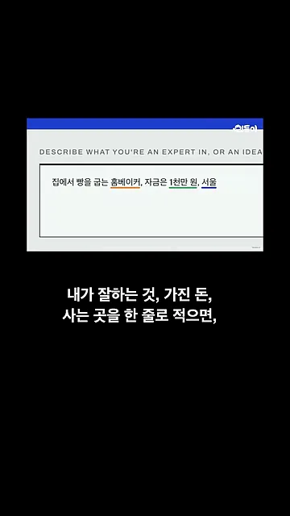
그러면 나에게 맞는 순서로 아이디어 목록이 나와요. 1번 '동네 빵 공급망', 2번 '공유 제빵 생산망', 3번 '소형 베이커리 시스템'처럼 모두 빵을 굽는 능력에서 출발한 사업들이에요.
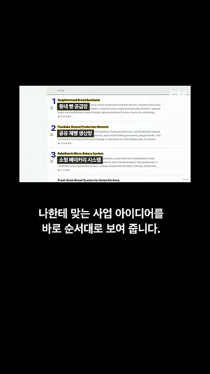
아이디어 카드에 적힌 것
하나를 누르면 카드가 열려요. 맨 위에는 숫자부터 나와요. 왼쪽 열에는 시장 규모 추정 30억 달러, 노란 줄이 그어진 '창업 자금' 30만 달러, 필요한 팀 형태(Workforce)가 있어요.
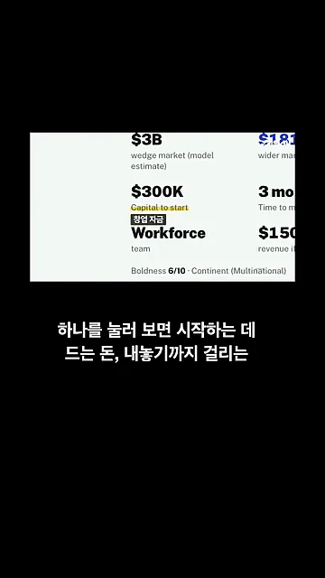
카드 오른쪽 열로 넘어가면 더 넓은 시장 1,810억 달러, '출시까지' 3개월, '잘되면 벌 수 있는 매출' 1억 5천만 달러가 보여요.
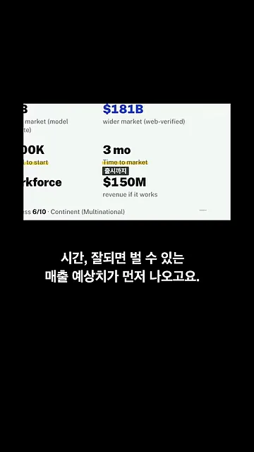
영상이 짚은 카드 항목을 표로 모으면 이래요. 값은 모두 '동네 빵 공급망' 예시 카드에서 나온 거예요.
| 항목 | 화면 표기 | 예시 값 |
|---|---|---|
| 시작하는 데 드는 돈 | Capital to start | 30만 달러 |
| 내놓기까지 걸리는 시간 | Time to market | 3개월 |
| 잘되면 벌 수 있는 매출 | revenue if it works | 1억 5천만 달러 |
| 경쟁사 | Competitors | 6곳 (예: Early Bird Baker) |
| 첫 90일 동안 할 일 | Your first 90 days | 단계별 계획 |
| 접어야 하는 조건 | (본문 속 문장) | 재주문 매장 8곳 미만 등 |
숫자 아래에는 경쟁사 목록이 있어요. 예시 카드에는 6곳이 있고, 첫 줄의 Early Bird Baker는 9/10 점수와 'Growth' 단계로 표시돼 있어요.
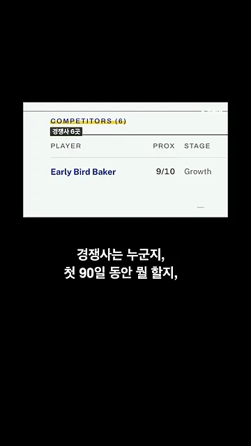
카드에는 어떤 결과가 나오면 접어야 하는지도 문장으로 적혀 있어요. 노란 강조 부분을 보면, 가장 싼 시험은 8주짜리 유료 배송 시범 운영이에요. 꾸준히 재주문하는 매장이 8곳이 안 되면 접겠다고 적어 뒀어요. 시작 전에 정해 두는 철수 기준이에요.
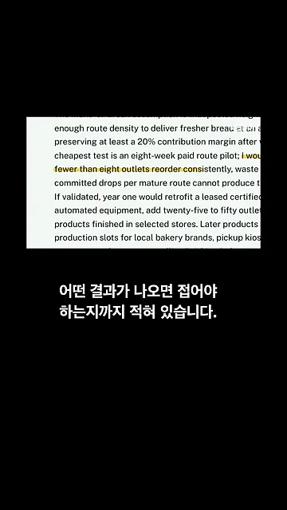
이미 가진 아이디어와 비교하기
생각해 둔 아이디어가 있으면 그 문장을 그대로 입력 칸에 넣으면 돼요. 그러면 비슷한 사업들이 줄줄이 나와요. 각 줄에 초기 자금, 출시 기간, 적합도가 나란히 있어서 내 아이디어가 어디쯤 서 있는지 볼 수 있어요.
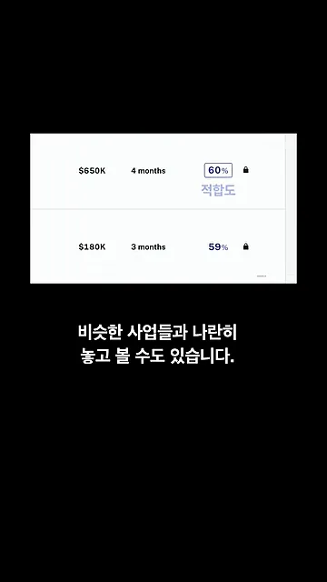
검색은 가입 없이 쓸 수 있어요. 창업을 생각하고 있다면 내 조건부터 한 줄로 넣어 보라는 게 영상의 마무리예요.